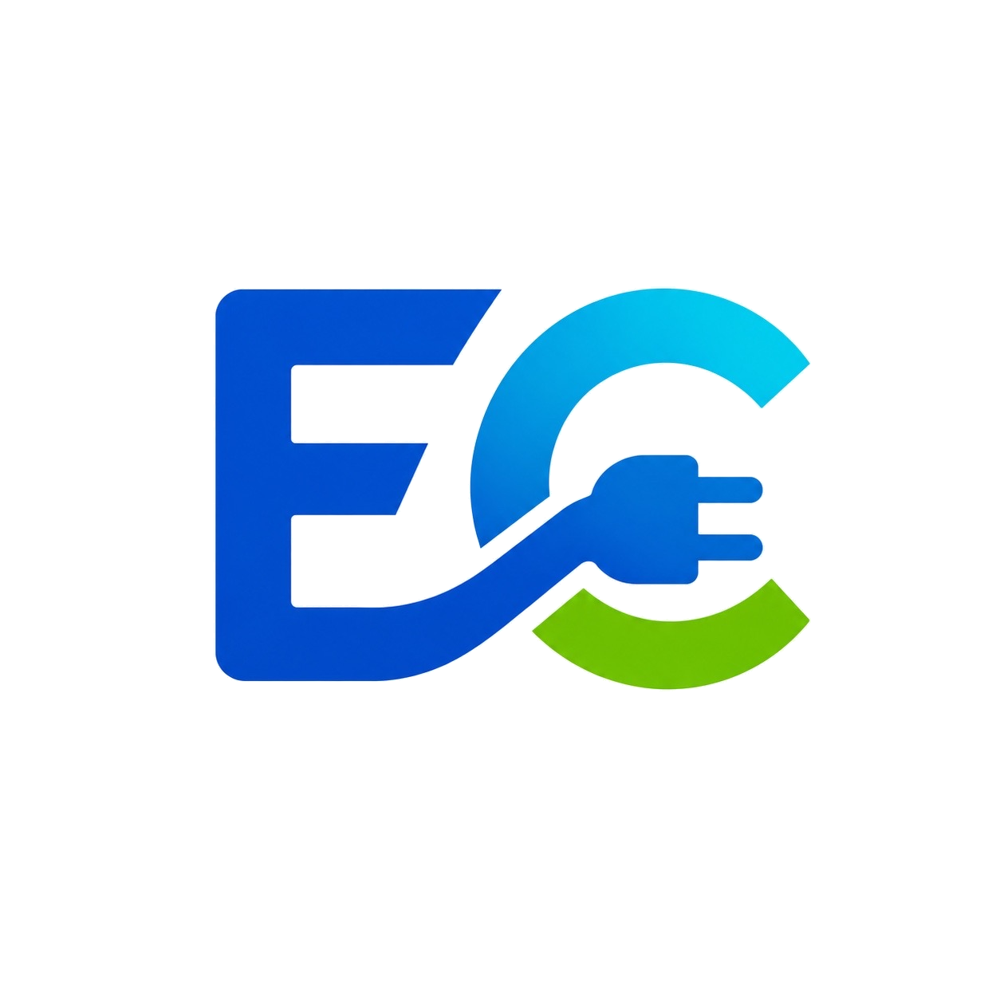

Explore
Browse the connectors on the wheel.

/ G2P Learning Tool
Explore the EV charging connectors shaping mobility around the world. Click a connector to reveal its passport.
⚡ Infrastructure literacy. Workforce pathways. Community impact.
Connector Passport
A quick snapshot of region, charging type, common vehicles, and fun facts.
/ How It Works
Browse the connectors on the wheel.
Click or tap a connector to open its passport.
Review regions, charging type, vehicles, and key facts.
Build infrastructure literacy one connector at a time.
/ Coming Next
This V0 is the first version of the Wheel of Connectors. Over time, Electra’s Corner will expand this into deeper connector profiles, visuals, quizzes, and learning guides.